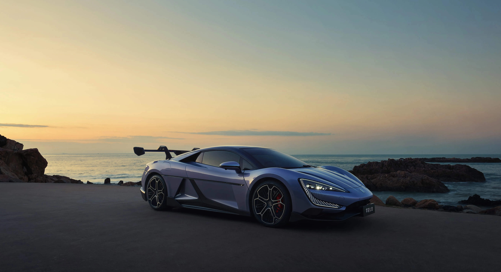

Why Chinese electric vehicles, like the BYD U9, could help California’s clean and affordable future.

California is known for being ahead when its about clean energy and new technology, but electric cars are still too expensive for a lot of people, especially when the average comfortable living cost is 120,000. Chinese EVs offer something better for the people: they’re cheap, still full with features, and could help more people switch away from gas cars.
I break down three reasons why Chinese EVs could actually benefit California: they help the environment, they increase competition and lower prices, and they bring in advanced technology that drives inovation.
How affordable EVs can help reduce emissions and make clean transportation realistic for more Californians.
Explore Environment →How Chinese EVs can push companies to lower prices, improve quality, and give buyers more choices.
Explore Competition →How Chinese automakers lead in battery tech, smart features, and futuristic designs.
Explore Technology →All information in this project is based on real articles and research. You can view every source on the Sources page.